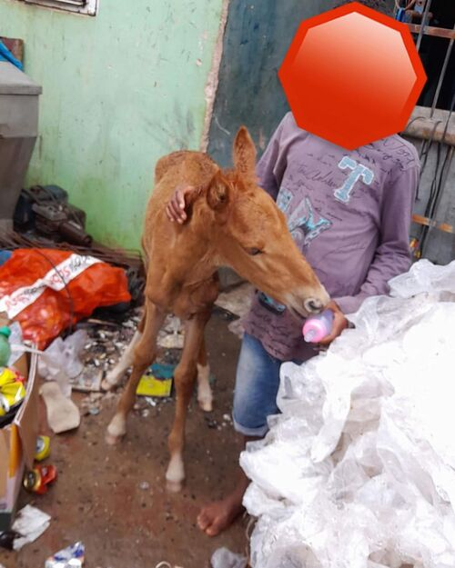
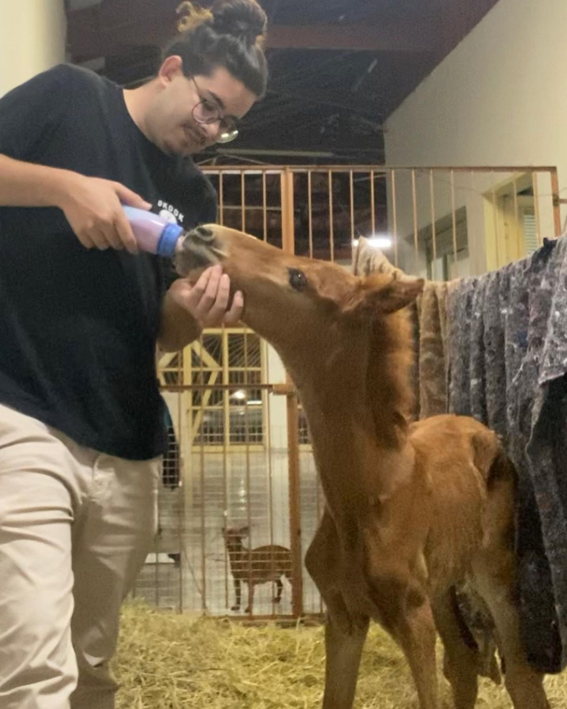
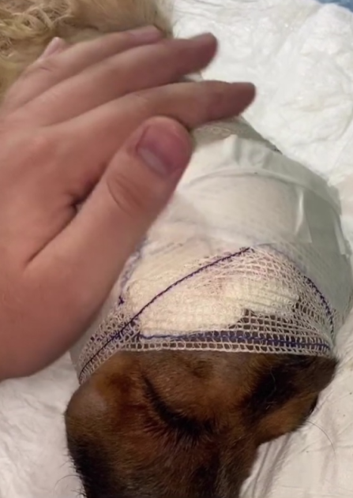
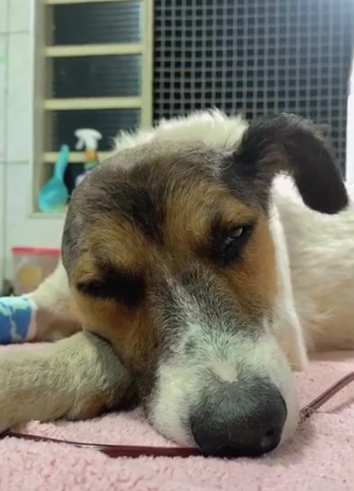

Ana Castela

Ana Castela foi uma égua resgatada, proveniente de uma mãe que fora abandonada nas ruas. Após seu nascimento, sua mãe faleceu e nós a acolhemos com todo o cuidado e carinho necessário.

Hoje, Ana Castela desfruta de plena saúde e bem-estar, frutos de nossos cuidados. Após um período ao nosso lado, encontrou um novo lar e foi adotada.
Vicente

Vicente foi resgatado com uma grave infestação de bicheira, que o levou a perder uma orelha. Posteriormente, enfrentou os desafios da cinomose e da doença do carrapato.

Apesar da difícil jornada, com cuidados intensivos, ele se recuperou completamente. Sua trajetória foi uma verdadeira batalha, porém hoje Vicente encontrou um novo lar e está desfrutando de uma vida feliz e saudável ao lado de sua família adotiva.

Seja Voluntário
Junte-se a nós para fazer a diferença na vida dos animais - Seja voluntário em nossa ONG e ajude a criar um mundo onde cada criatura tenha amor, cuidado e proteção.
Clique no botão abaixo e se inscreva
Quero ser Voluntário